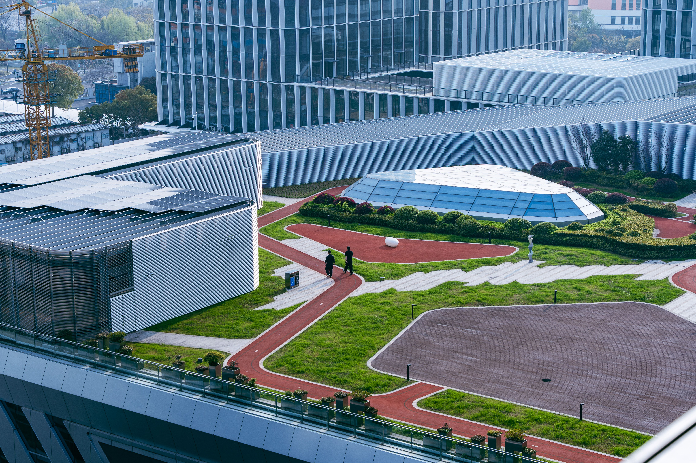
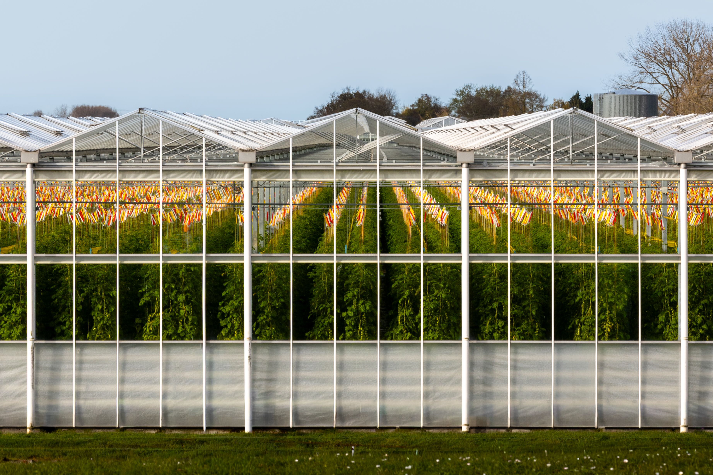
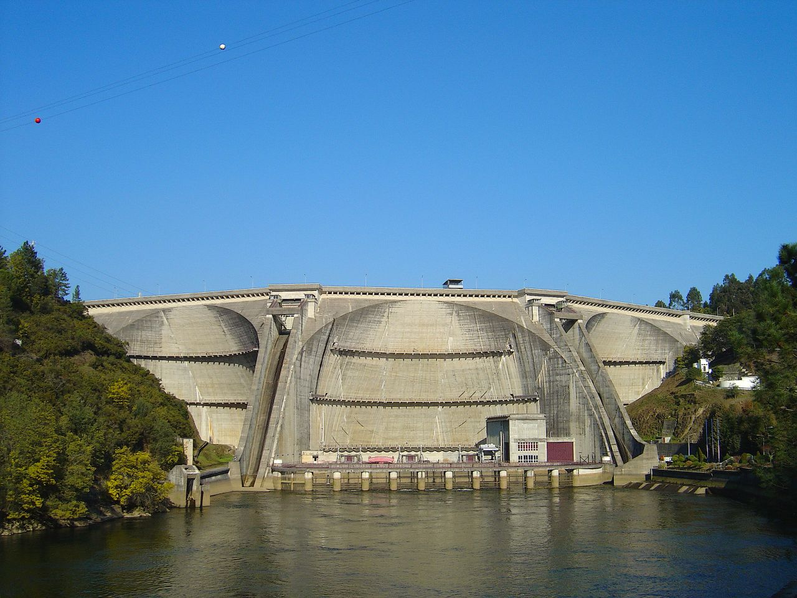
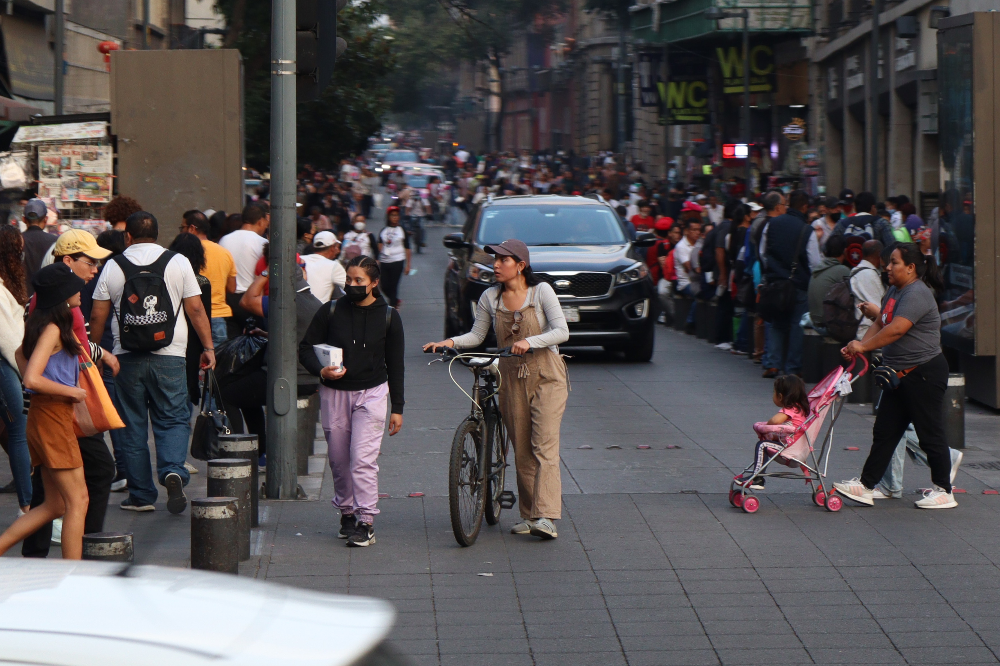

Solar Media
Real-world Implementations
What are "Real-World Implementations?"
"Real-world Implementations" is about how Solarpunk ideas are being built in this world. From large-scale solar panel installations, established community-driven urban designs, and blockchain technologies, anything Solarpunk-related that has been tangibly built into the world falls under this page.
See the world!
Chinese Solar
Dyson Farms
Portugal Renewable Energy Demonstration
Spanish Walkable Cities
"example title 5"
"example title 6"





Image Credits
1st row, right image (hydropower)

2nd row, left image (walkable city)